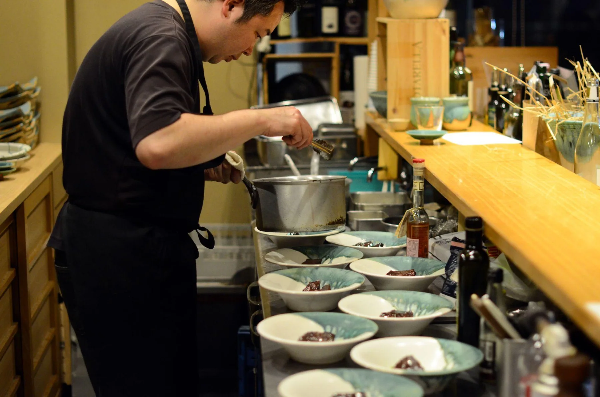
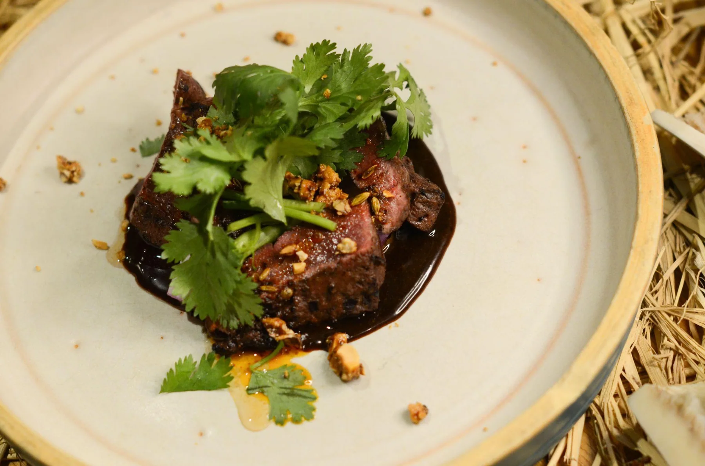

TABLE ARCHIVE / 熊本・阿蘇
阿蘇・あか牛の会
阿蘇の生産者、料理人、お客様が、神楽坂の一つのテーブルを囲んだ夜。食べることから生まれた対話を、写真・記事・映像に残す。
テーマあか牛
生産者吉田竜平
ゲスト料理人瀬野景介

DOCUMENTARY / 映像
この夜の記録。
FILM 01
FILM 02
PHOTOGRAPHY / 写真
食卓の断片。




TEXT / PHOTOGRAPHY：江六前一郎（既存アーカイブ。公開前に確認）
阿蘇の生産者、料理人、お客様が、神楽坂の一つのテーブルを囲んだ夜。食べることから生まれた対話を、写真・記事・映像に残す。


TEXT / PHOTOGRAPHY：江六前一郎（既存アーカイブ。公開前に確認）